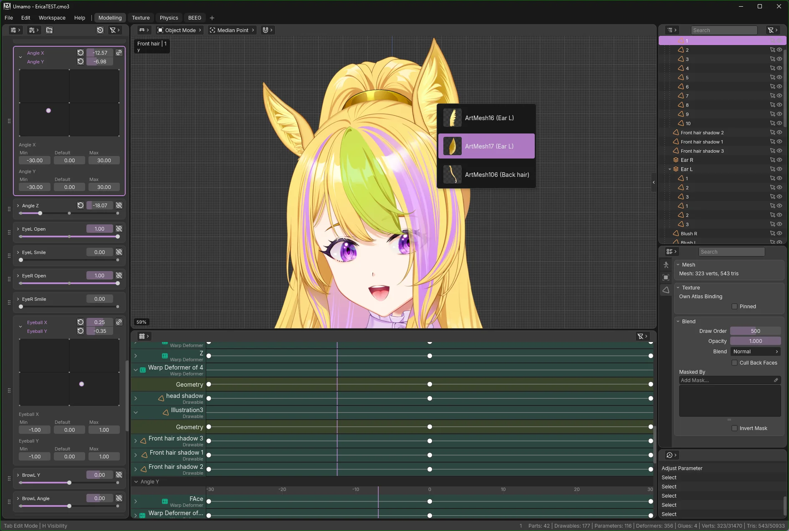

Open-source 2D Puppet Modelling
Umamo is a free, cross-platform modelling editor for 2D puppet animation with pen and touch support. It reads and writes Live2D Cubism .cmo3 and .moc3 files, so it fits the workflow you already have.
Windows, MacOS, and Linux · free and open source

Download
The current build is Umamo (see releases), published .
Download UmamoPick your platform from the table.
All platforms
| Platform | Standalone No Java needed | Java 21+ .jar |
|---|---|---|
| See the GitHub releases page for every build. | ||
Verify your download against SHA256SUMS.txt · Release notes · All releases · Source code
Standalone builds bundle their own runtime; unpack and run. The .jar builds need Java 21 or newer and run anywhere Java does. MacOS is .jar-only for now. Android tablet builds are in progress.
Installing
- Download the
.zipand extract it anywhere you like. - Run
umamo.exefrom the extracted folder. - SmartScreen will say “Windows protected your PC”. Choose More info, then Run anyway.
- Install Java 21 or newer if you don't have it.
- Download the
.jarfor your Mac (Apple Silicon or Intel) and double-click it, or run it from Terminal:java -jar umamo-macos-arm64-<version>.jar - If Gatekeeper quarantines an app bundle and calls it damaged, it is not damaged. Clear the flag in Terminal, or allow it under System Settings → Privacy & Security:
xattr -dr com.apple.quarantine /path/to/umamo.app
- Download the
.tar.gzfor your architecture. - Unpack it and run the launcher:
tar xzf umamo-linux-x64-<version>.tar.gz umamo/bin/umamo - That's it. Linux doesn't restrict you from running any application that you wish to run on your computer.
Built for 2D puppet work
One shared codebase, a modern UI, and a file layer that speaks the formats you already use.
Runs where you draw
Windows, MacOS and Linux today, on x64 and arm64. Android tablet support is in progress.
Pen and touch
Made for pen displays and tablets. Pen and touch are first-class input, not a mouse emulation.
Cubism Editor interop
Opens and saves .cmo3 projects byte-compatible with the official editor, so files move back and forth.
MOC3 in and out
Import and export runtime distribution .moc3 along with their sidecars.
Import your artwork
Bring layered files straight from Krita(.kra), Photoshop(.psd), and Clip Studio Paint(.clip).
A modern, resolution-independent UI
Crisp at any DPI, with a command registry and customisable key bindings.
File formats
| Format | Read | Write | Notes |
|---|---|---|---|
.uma | Yes | Yes | Native UMA Model |
.cmo3 | Yes | Yes | Cubism Editor model, supports up to Cubism 5.4. |
.moc3 | Yes | Yes | Cubism runtime distribution model, supports up to Cubism 5.4. |
.kra | Yes | — | Krita |
.psd | Yes | — | Photoshop |
.clip | Partial | — | Clip Studio Paint; has known blending issues. |
Found a problem with a format? Open an issue with a sample file.
Screenshots
Click any image to enlarge it.